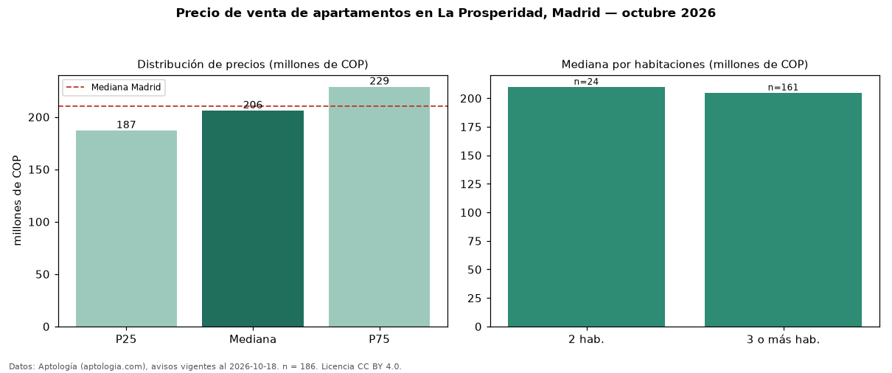

Precio de venta de apartamentos en La Prosperidad, Madrid — octubre 2026
Con 186 avisos vigentes, el precio mediano de apartamentos en venta en La Prosperidad, Madrid es COP 206 millones. Prácticamente coincide con la mediana de Madrid para apartamentos (COP 210 millones). Por metro cuadrado, la mediana es COP 3,50 millones/m² (n = 183 avisos con área), 3 % por debajo de Madrid (COP 3,61 millones/m²). Con el precio por m² de arriendo del mismo segmento (COP 19.675/m² al mes), la rentabilidad bruta implícita es 6,7 % anual (aproximación con medianas de ofertas distintas). El área mediana anunciada es 59 m². El segmento con más oferta es el de 3 o más habitaciones (161 avisos, mediana COP 205 millones); pasar de 2 habitaciones a 3 o más habitaciones cambia la mediana −2 %. La administración mediana declarada es COP 175.000 al mes (n = 152). El estrato más frecuente es 4 (60 % de los avisos con estrato). Datos: Aptología (aptologia.com), CC BY 4.0 — https://www.aptologia.com/venta/madrid/la-prosperidad. Archivos: PDF, CSV con las cifras y gráfica PNG.

| Avisos únicos | 186 |
|---|---|
| Percentil 25 | COP 187.000.000 |
| Mediana | COP 206.000.000 |
| Percentil 75 | COP 228.750.000 |
| Mediana por m² | COP 3.500.000 |
Fuente: avisos vigentes de portales inmobiliarios recopilados por Aptología, deduplicados (mínimo 30 avisos únicos por celda). Precios pedidos, no cerrados. Fecha: 2026-10-18.